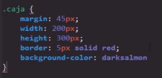
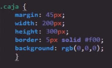
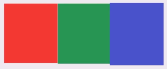
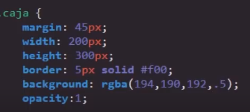
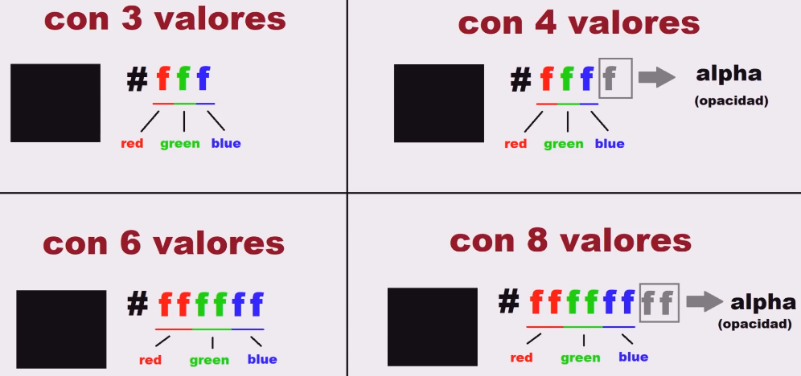

Los coleres son quizas uno de los temas más importantes dentro de lo que es el diseño de una paguina web, por lo tanto CSS al ser un lenguaje web basado en la inplementación de los diseños es capaz de utilizar toda la gama de colores desiponibles en diferentes formatos, de esa forma adaptando se a cualquiere necesidad que pdiese surguir en el diseño de una paguina web.
A continuación se desenglosan los principales formatos de colores aceptados por CSS, sin embargo para obtener un listado completo de los codigos de color basta con hacer una busqueda de los codigos de color HTML o ingresar a este tutorial de colores CSS donde se define en propfuncidad todas las caracteriticas y funcionalidades de estos en CSS.
Formatos de colores
Nombre del Color
-
Una de las formas más simples de definir el color de un elemento es simplemete utilizando su nombre, cabe resaltar que como todo lenguaje de programación su sintaxis esta escrita en ingles, por lo que es necesario utilizar el nombre de los colores en ingles
En este enlace se puede encontrar el listado de todos los nombres de colores disponibles en CSS
Nota: Esta forma de definir los colores no es lo más recomendable, ya que al aplicar los colores de esta forma el navegador el que aplicara el tono de color que tenga definido por defecto con ese nombre, tonalidad que puede variar al ingresar desde un navegador diferente, por lo que es muy posible que ingresando desde otros navegadores los tonos de colores de la paguina sean otros.
 RGB
-
En el area de la tecnología los colores primarios no son el amarillo, azul y rojo, como en el mundo del arte, para las computadoras los colores primarios son el rojo, verde y azul, esto ya que mesclando estos tres las computadoras son capases de crear cualquier otro color.
Para lograr esto las computadoras asignan un valor a estos tres colores en una escala, en la cual mientras mayor es el valor de cada color mayor es su intencidad en la mescla, definiendo así que el valor minimo de la escala es "0" mientras que el maximo es "255".
En RGB cada valor define un color:
El primer número define el color Rojo
El segundo número defien el color Verde
El tercer número define el color Azul
Ejemplo
Nota: Para poner uno de estos colores en su intencidad maxima simplemte se le asigna el valor maximo (255) mientras que a los otros colores el valor minimo (0), a su vez si se desea generar un tono más oscuro simplemete basta con bajar el valor del color en cuestión, por ejmplo (150).
Nota: Por otro lado en este formato el color negro es (0,0,0) es decir todos los colores en el valor minimo mientras que el color blanco es (255,255,255) es decir todos los colores en el valor maximo, y por ultimo la escala de grises se logra con todos los valores igualados ejemplo (150,150,150).
RGBA
-
Este formato de color realmente es una variante de RGB, diferenciandose con la inclusión de un cuarto valor llamado "alpha", el cual representa la "opacidad" del color, es decir la transparencia del color, a la cual se le asigna un valor minimo de "0" en el cual el color es totalmente transparente y "1" donde el color es completamente visible.
En otras palabras RGBA es un formato con el mismo funcionamiento de RGB pero con la capacidad de definiruna trasparencia para el color.
 Exadecimal
-
Este formato de colores es el más complejo debido a que se basa en el codigo de numeración exadecimal, en el cual se utilizan 16 simbolos para numerar, estos simbolos estan conformados por los numeros del "1" al "10" y las letras de la "A" a la "F", con este codigo de numeración se crea un valor para cada color manteniendo el formato de colores primarios web (rojo, verde y azul) donde nuevamente :
El primer valor define el color Rojo
El segundo valor defien el color Verde
El tercer valor define el color Azul
Una caracteritica de la empleación del formato exadecimal es que se puede emplear los valores de diversas formas para defir los colores web:
Nota: En CSS es necesario incluir el hashtag (#) alprincipio para definir el codigo exadecimal como tal.